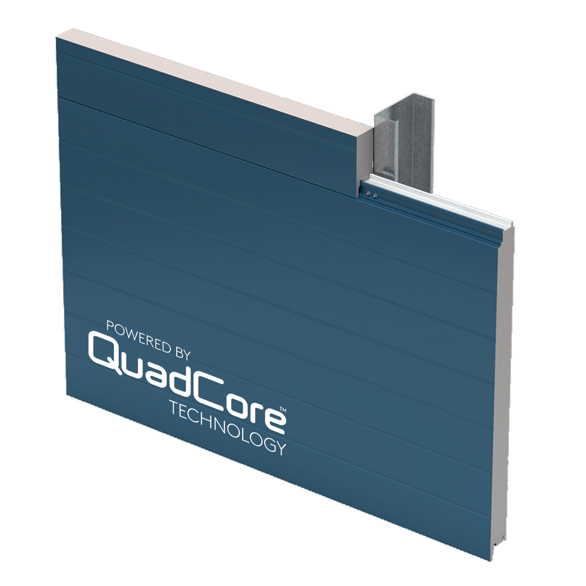
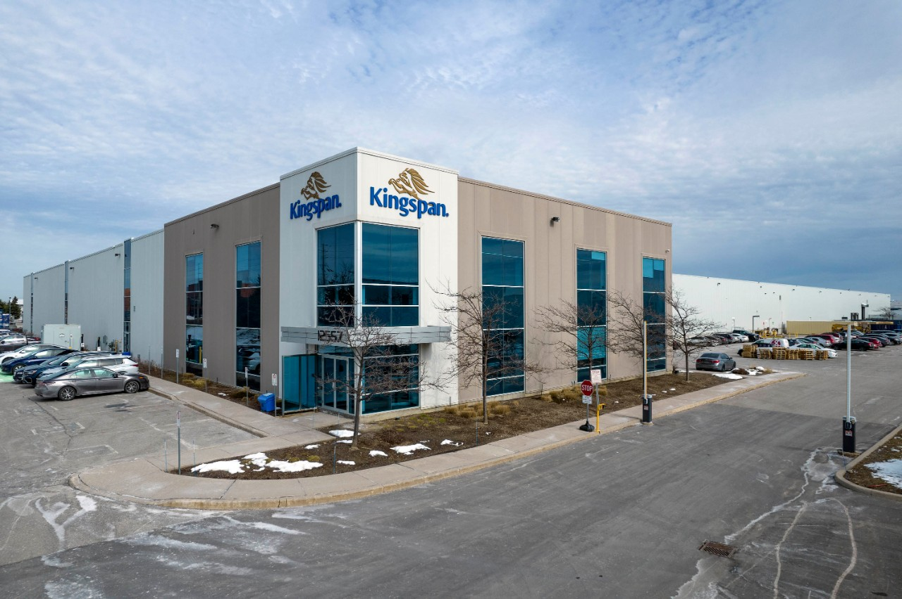
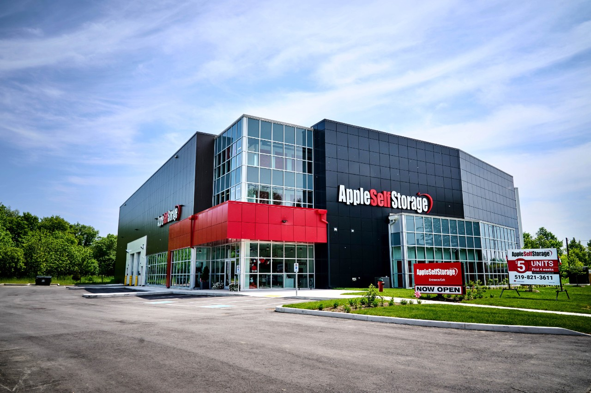
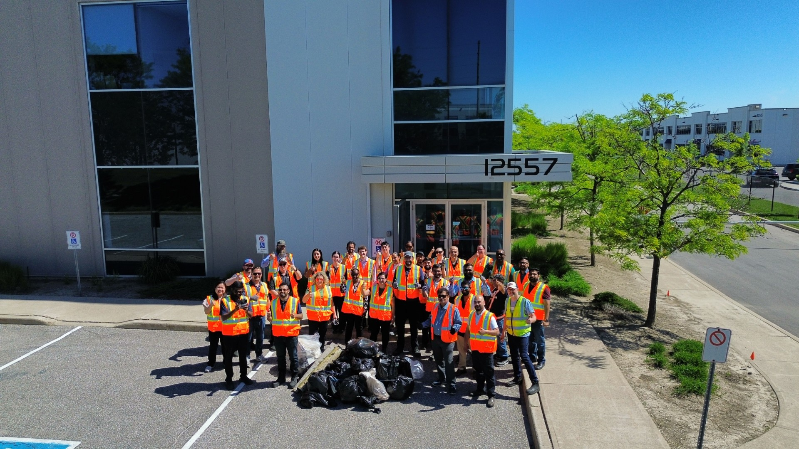
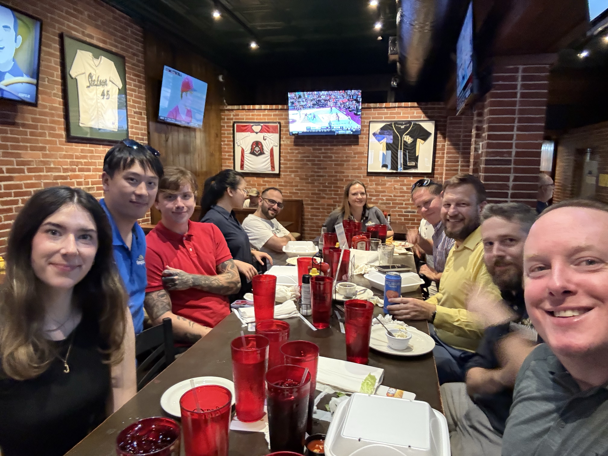
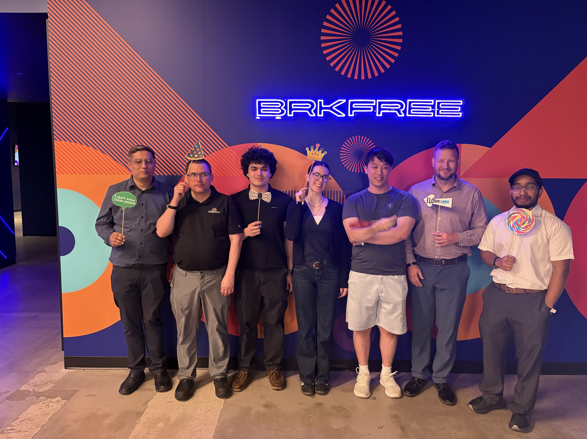

Kingspan Insulated Panels · IT Intern · Summer 2026
Co-op Work Term Report
This is my Summer 2026 work term as an IT intern at Kingspan Insulated Panels. I wasn't new when I walked in in May. I joined the team in July 2025 and spent that summer in applications, building internal tools so I started this term already knowing the environment and the people. I carried on with applications work for the first few weeks this year round, then, in mid-May, I moved across to infrastructure, and I have spent the rest of the summer on an RMM migration and network monitoring.
The employer
Kingspan Insulated Panels
Kingspan is a global manufacturer of insulated panels and insulation for commercial and industrial buildings. I work out of the Caledon site, embedded in the IT department that supports all of North America.
The past 4 months I have observed how computer science is applied outside of school at an enterprise level. I have learnt about infrastructure, networking, endpoint management, identity, and the business applications a manufacturer runs on. It is a pretty different discipline from the one my courses have described. Coursework rewards building something new and correct in order to learn, this environment rewards familiarizing yourself with something old, pre-existing, and load-bearing while you improve it. Almost nothing here starts from an empty file.



Panels, at scale
High-performance insulated panels and insulation, manufactured on site.
Small team, big responsibility
Systems engineering, system administration, service delivery, security, applications, and data analytics. All six of which I got to shadow over the year.
Sustainability, counted on
Kingspan's global program Planet Passionate covering carbon, energy, water, and circularity (and the reason I spent some time on a site cleanup instead of at my desk.)
IT with a plant floor
Downtime here isn't always just an inconvenienced spreadsheet, it's production. That changes how carefully you plan a change, and it's the clearest difference between this and any project I've submitted for a grade.
Job description
In applications I assisted with app creation and website design with a touch of backend development. In infrastructure I looked after things people already relied on through network montioring. This term let me do both..
Last year I focussed heavier on app creation through power apps and web design using CSS and HTML. This year when I first joined back I assisted with a website, but more with the backend development of it using Power Automate Flows. The project was at its near end by May so mid may I transferred teams to work on infrastructure starting with an RMM migration.
The handover itself was the first real test of the term. I was tidying up one project with the applications team, creating flows, testing, and writing documentation for each of the many flows that were created and funnelled directly into the next project where I had lots to learn.
Finishing what I'd started
- Power Apps replacing manual processes
- Power Automate flows to bridge back end to front end
- UI design
- Documentation
Keeping it running
- RMM migration
- Network monitoring: dashboards, alerting, and monitors
- Communication: reaching out to associated support services, documentation, meetings
The RMM migration
An RMM (remote monitoring and management) platform is how an IT team looks after a large number of machines: patching, scripting, alerting, remote access. Replacing one means touching every endpoint in the business, none of which is work that is invisible to the people using them.
This was the first project where I wasn't working on small tasks assigned by a team. In this project it was mainly up to me and the infrastrucutre manager to guide me. I didnt have a project outline like each course gives at the start of a new assignment. It was me, Sam, many teams calls, and the new RMM left to me to learn how to use.
- Communicate. Establish what needs to be completed.
- Pilot. A small, forgiving task, chosen so that failure was fixable.
- Stage the rollout. After learning how to set up one site step by step it was now time to roll out the rest on my own.
- Verify. Confirm and check-in with the infrastructure manager as the project developed.
- Decommission Date. It was important to have this project done by the decomission date of the old RMM so we can seemlessly monitor our endpoints with no downtime or grey areas.
Not everything goes to plan : Inevitably issues always come up. For me, generally device authentication was a big thing. Due to these issues arising more than once it forced me to research deeper into SNMP, WMI, and reach out to get help from others. I learnt a lot from the work being so hands on an I definitely learnt a lot from the supports around me to help solve these issues.
What I'd take to the next migration: communication is part of the deployment, not an announcement that follows it. The technical work was the smaller half.
Network monitoring was the opposite learning curve. Instead of pushing change, you sit and interpret. With network monitoring you learn to observe. You observe the incoming alerts, the dashboards, and even learn to look out for the odd device reporting normal when it shouldnt be. Through network monitoring I learnt how to respond to different level alerts, how quickly, and who to go to.
What the degree gave me
Operating Systems and Microcomputing helped give me the vocabulary to follow infrastructure conversations. UI Design and Web Design helped when making the app screen and website UI changes. Software System Development & Integration for making systems talk that were never designed to.
What it didn't
The entire Power Platform. RMM tooling. Reading a ticketing system. Reading a monitoring dashboard. Change control. Asking a non-technical user the question that finds the real problem.
Shadowing
Six Desks, One Department
Over my time in the department I sat with a member of each team, shadowing someone who specializes in that area: systems engineering, system administration, service delivery, security, applications, and data analytics. It's the part of the placement that I find so fascinating. In order to bring together one well rounded fully self sufficient IT department there are so many different areas to consider. Even though I've been here for over a year I'm always learning new things about each team as I work through projects, reach out to others, travel, and attend meetings.
Sitting with six people also showed me that the same incident looks like six different problems depending on which desk you're at. Service delivery sees an unhappy user; systems engineering sees a design decision made two years ago; security sees exposure. None of them are wrong, and I'd never have noticed that from inside just one team.
Systems Engineering
An environment where hardware is constantly being optimized and monitored. The System engineers work hard and long hours to maintain a steady, reliable network for all sites
System Administration
Accounts, groups, permissions, policy. I came in thinking of identity as paperwork and left understanding it as the thing almost every other system leans on as a digital foundation.
Service Delivery
The bridge between how a user describes a problem and what is actually broken. Service delivery has a great balance of diagnostic and communication skills along with practical and technical problem solving to satisfy the end user and clean up any issues.
Security
Risk, policy, and monitoring. Where the interesting question is never “does it work” but “how could this be misused.” This is my aligned with my area of emphasis, and shadowing it confirmed my interest where I'd love to learn more.
Applications
Where I started. Automation can mean so much more than coding. It can mean designing, testing, and consulting. Not every automation has to be with a written coding language either. Here I saw how useful the Power Platform can be.
Data Analytics
The reporting layer is only as good as whoever entered the data. Data analysts have a great understanding of how the plant operates, what needs to be presented, and what each value represents. Data quality turned out to be far less of a technical problem than I expected and far more of a human one.
Where I'd like to go next: security. I declared my area of emphasis as cyber security and although I have not started any technical courses to do with it yet, what I have seen here has motivated me further that it is certainly a point of interest for me. The shadow rotation gave me a concrete reason rather than a theoretical one. I think most people go into Computer Science assuming that they will come out as a developer but there is so much more to this department than code. The RMM migration opened my eyes to a world where technicality meets practicality. I loved seeing my digital work have a physical counterpart. I do still enjoy being creative through programming so I feel now from seeing both infrastructure and applications I feel optimistic about persuing security since it seems to be a mix of both. The hardware, investigation, practicality half mixed with a degree of programmable solutions and precautions intruiges me.
Beyond the desk
Not all of it was at a keyboard



Goals & learning outcomes
Three goals, honestly assessed
I set three learning goals at the start of the term, each with an action plan and a measure of success I wrote before I knew whether I'd hit it. Here they are against what actually happened.
Critical & creative thinking: depth and breadth of understanding
The goal
To understand IT systems and infrastructure by working real problems, not classroom versions of them. To analysing an issue from more than one angle, looking for the underlying cause rather than just the immediate fix, and meeting using tools with curiosity instead of hesitation. I wanted to expand my habit of thinking before acting.
How I worked at it
Diagnose independently before asking for help. Learn systems outside my assigned work through documentation and questions. Keep notes on what I resolved and why.
What actually happened
The honest version: for my first month I asked for help before I had finished reading the error message. What fixed it was a rule I set for myself. Before asking anyone, I had to be able to state what I had already ruled out myself. It slowed me down slightly but only at the start, and the questions I did ask got sharper because they were more precise and well adjusted. That single habit did more for this goal than any tool I learned.
The pattern recognition came later and was the more interesting part. Once I had seen the same root cause turn up in a couple different places, I stopped treating issues as individual events and started asking what they had in common. That's the shift from fixing to understanding.
Against my measure of success
I said I'd count this met if I needed less guidance over time and could explain my reasoning. Both are true. I resolve a wider range of issues on my own than I could in May, and I can say why, not just what. The breadth half of this goal was answered by my shadowing: six teams meant six different views of the same environment.
Communicating: integrative communication
The goal
To explain technical information clearly to whoever is listening (a non-technical end user just as effectively as a colleague or my supervisor) across tickets, email, documentation, and spoken updates.
How I worked at it
Write findings down to force myself to actually understand them. Keep documentation clear enough that someone else could build on it. Ask for feedback and use it. Speak up in team meetings rather than waiting to be asked.
What actually happened
Some projects got documentation and others got verbal training. For my applications oriented help in May, my last form of assistance was to create documentation and write about each flow created for the backend of the website. I detailed things like reason for the flow, all connections to it, ownership rights, user access, a breakdown of how it worked, and a visual representation of how it looked. As for my infrastructure experience that was less documentation heavy. When the migration was complete and it was starting to roll out to other teams I just assisted where I could, physically showing them examples of how to navigate the site. Both ways, I displayed forms of communication, written, and verbal that helped the people around me, but also helped me learn and solidify my understanding of my findings.
Against my measure of success
I would say both my written and spoken communication improved with these projects. I found myself feeling rather helpful to others when walking them through the RMM and I feel good about the people to come since I wrote physical documentation for the end of the applications work.
Professionalism: personal organisation and time management
The goal
To be reliable under a real workload with several tasks with different deadlines running at once. Nothing should fall through the cracks and I should be building habits that outlast the work term.
How I worked at it
Set priorities at the start of each week. Review at the end of each day what got done, what carries over, and what the team needs to know. Raise it early when priorities are unclear, rather than waiting until something was too late.
What actually happened
I underestimated this goal more than the other two. I can't say I followed my plan every week but I can say that no task got left behind. Sometimes it ate into my time more to meticulously plan out my days rather than to jump right into my task, so planning sometimes was a mental note than a physical one. Regardless, I didnt have any incidents of missed due dates or forgotten tasks. Everything that was asked of me was complete, and in an orderly manner.
Against my measure of success
I met deadlines without needing reminders and carried work without dropping any of it, which is what I said I'd measure. The part I got wrong: I still underestimate how long anything depending on other people's schedules takes, and I'd build that slack in deliberately next time rather than discovering it.
Reflection
Three things I'd do differently
Speak Up
As an intern it can feel intimidating speaking up about things I require or thoughts I have when in meetings. I feel I'm pretty good about asking my colleagues questions whenever they pop up but I could definitely get better at voicing my ideas at the fear of being shot down, wrong, or just sounding silly. Change and improvement is a process through trial and error, everything starts somewhere so I feel I could voice my ideas louder. Either way, its good to learn "why not" and best case scenario I can move forward with new projects.
Document while I'm in it
When I was doing documentation last year and at the end of the applications project this year it was always my last step. When I got around to doing it I found myself needing to familiarize myself with the project again all the way starting at the beginning. Not only did it take a lot of time doing it all in one go at the very end but it was tedious and boring. Getting through documentation as the project is ongoing the best I can would definitely keep my notes sharp, and eliminate the gruling task of doing one big write up at the end.
Don't be afraid to take on more
I've been completing tasks as they are given to me throughout the term. Sometimes the tasks are small, sometimes theyre larger. Sometimes they stack and sometimes they come in a bit slow. As an intern the last thing you want to be is an inconvenience to the colleagues around you so sometimes it feels as though I'm being a bother by asking people for more things to do. There's also the worry that I would eventually bite off than I can chew with my workload. I think going forward I could be asking for more work and overcome the fear of being an inconvenience because at the end of the day I know my coworkers are nothing short of helpful and I know they will be more than understanding to aid me along the way.
Conclusions
What to take away
If you described this page back to me, I'd want you to say: she spent a summer on a manufacturer's IT team, moved from building applications to running infrastructure four weeks in, took an RMM migration across the whole endpoint fleet, and can tell you specifically what she got wrong and what she changed because of it.
My three goals were about thinking, communicating, and managing myself. What I didn't expect is how much they turned out to go perfectly hand in hand. Thinking clearly is what gives you something worth communicating. Managing your own time is what buys you the room to think in the first place. And the technical skills came faster than any of the three. I learned those on the job in weeks. The other three took the whole term and still have room to grow and learn from.
I came in wanting to build applications. I'm leaving more interested in the systems underneath them.
That's the real outcome of switching disciplines inside a single term and shadowing the rest of the department around it. I didn't just learn infrastructure, I found out where in it I want to be. Security is my area of emphasis at Guelph, and having now watched my colleagues I'd love the chance to get my foot in the door. Not because it's the label on my degree, but because I've now seen what the questions actually look like. I'd rather know that now than after graduating.
Acknowledgments
The team
Thank you to Winston and Sam for handing a second-year student a real migration instead of a safe project, and for making me truly feel apart of the team. Their patience and guidance was and is greatly appreciated.
Thank you to the KA IT team for explaining things twice -- once properly, and again a week later when I came back with a better question. To the applications team for the start of the term and the infrastructure team for the rest of it. I got to see the same department from two sides in four months because both of you made room for me.
And thank you to the University of Guelph Co-op office and the School of Computer Science for the support behind their co-op program.